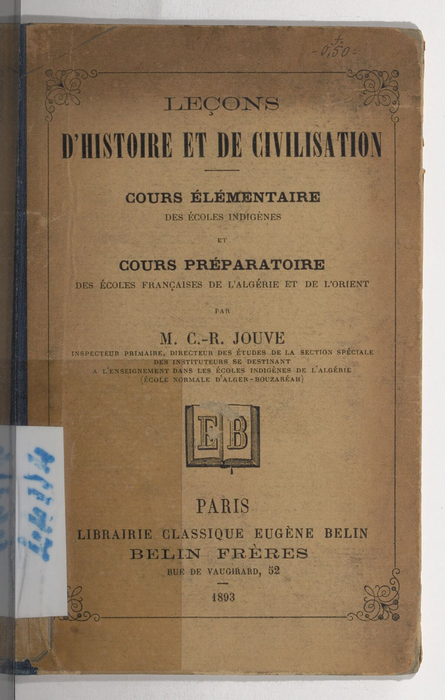
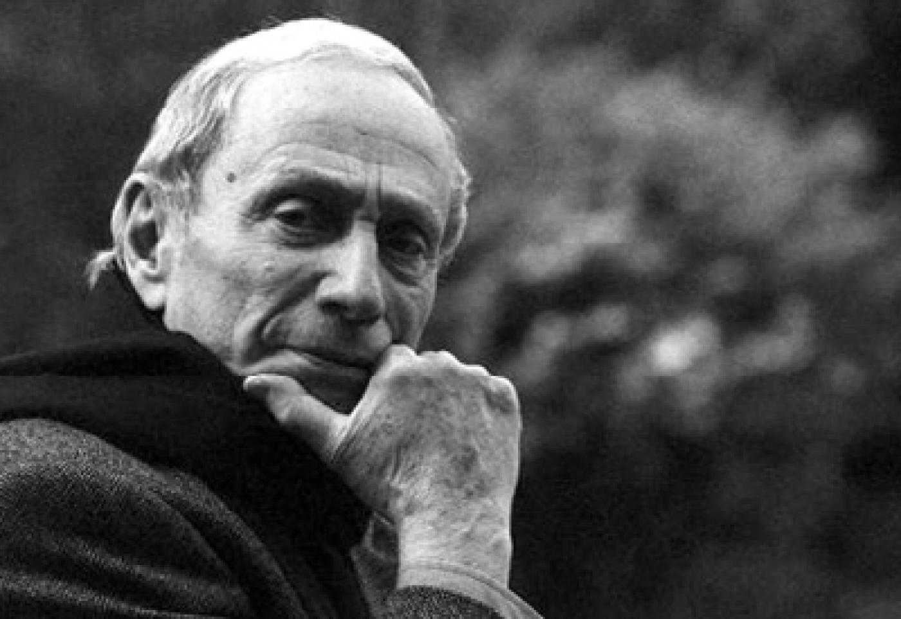
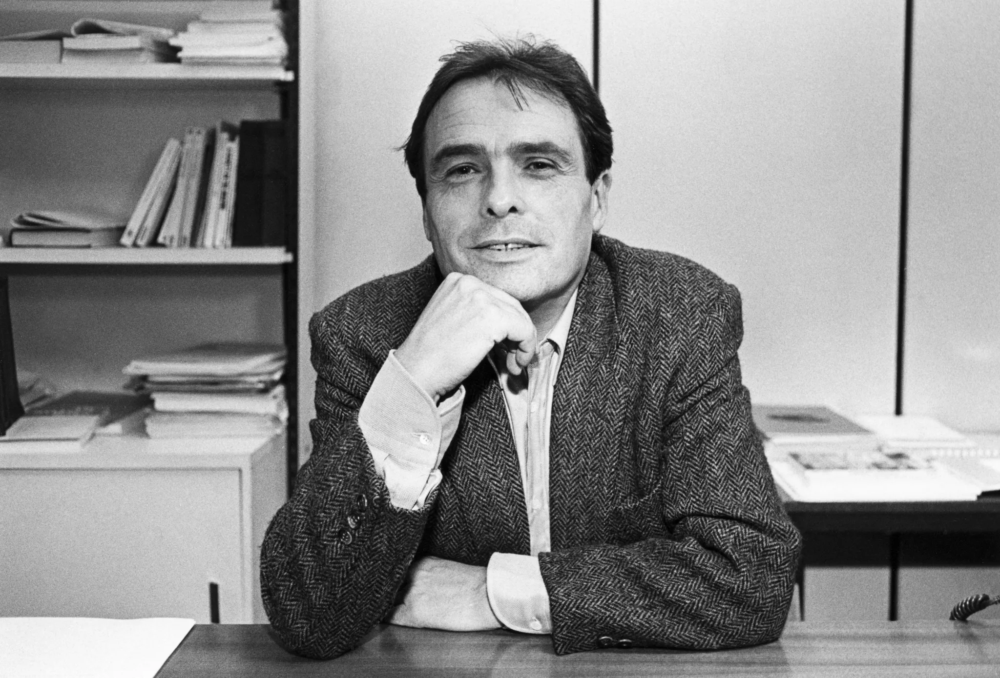

Manuel d’histoire enseigné aux enfants d’Alger comme à ceux de Lyon. Lisez-le. Cherchez un Algérien qui parle. Pas un nom mentionné — une voix.

Jouve · Leçons d’histoire et de civilisation · 1893 · écoles indigènes · Gallica BNF
Lire les colonisés comme théoriciens à part entière.
Chosification (Césaire), langue marâtre (Djebar), colonisabilité (Bennabi). Des outils d’analyse à part entière.
L’intérieur de la situation coloniale. Ce qu’on voit d’en bas n’est pas ce qu’on voit d’en haut. Cette position est un savoir.
Pas pour réciter leur souffrance. Pour lire avec eux ce qu’on continue de subir — et de produire aujourd’hui. Lire avec eux pour aujourd’hui, ce n’est pas plaquer 1830 sur le présent : à chaque fois, on mesurera l’écart.

La domination imposée par une minorité étrangère, racialement (ou ethniquement) et culturellement différente, au nom d’une supériorité raciale (ou ethnique) et culturelle dogmatiquement affirmée, à une majorité autochtone matériellement inférieure.
Action de rétablir la paix, l’ordre. Vocabulaire militaire français en Algérie de 1830 à 1962. Tous les manuels l’utilisent.
Réduire un peuple à une chose. Le mot « pacifier » traite un peuple comme un meuble qu’on déplace. Le mot fait le travail de l’idéologie.
Pierre Bourdieu publie en 1958 Sociologie de l’Algérie. Il s’oppose à la guerre, prend les indigènes au sérieux. Et pourtant — il les étudie comme objets sociologiques, pas comme interlocuteurs théoriques. C’est tout l’écart qu’il s’agit d’apprendre à voir.

« […] les choses échangées (dons, services, etc.) n’étant jamais seulement des choses mais aussi des paroles […] »
Bourdieu décrit le paysan algérien de l’extérieur. Il a raison sur les faits — il manque la position. Ce parcours s’écrira depuis l’autre rive : avec Fanon, Bennabi, Djebar, Sayad — et avec un Maghrébin du XIVᵉ siècle qui pensait déjà le pouvoir.
Tout au long du parcours, on lit avec elles et avec eux, jamais sur eux.
Écrire, c’est quelquefois choisir de se taire. On peut écrire dans l’aphasie, parce qu’on a perdu sa voix, qu’on espère, au bout des mots, la retrouver […]
Djebar est élue à l’Académie française en 2005 (reçue en 2006), première écrivaine du Maghreb à y siéger. Elle écrit dans la langue qui a effacé l’arabe maternel. C’est cette tension qu’elle théorise, et c’est dans cette tension que ce parcours commence.
Quand vous voulez savoir ce que la France a fait en Algérie — où allez-vous chercher ? Un manuel ? Wikipédia ? Un grand-père qui s’est tu ? Un film que vous n’avez jamais cherché ?
Sur une feuille — ou un fichier — notez les trois sources auxquelles vous avez recouru jusqu’ici quand on vous a interrogés sur l’Algérie. Puis notez les trois sources que vous n’avez jamais consultées. La carte du silence se dessine entre les deux.
Les colonisés ont produit des concepts — chosification, schéma épidermique. Des outils d’analyse, encore opérants aujourd’hui.
Césaire · Djebar · Bennabi en première personne. Pas par le manuel qui les résume — par leurs mots.
Chez Ibn Khaldoun — Maghrébin du XIVᵉ siècle qui théorisait déjà le pouvoir, l’asabiyya, la dynastie.